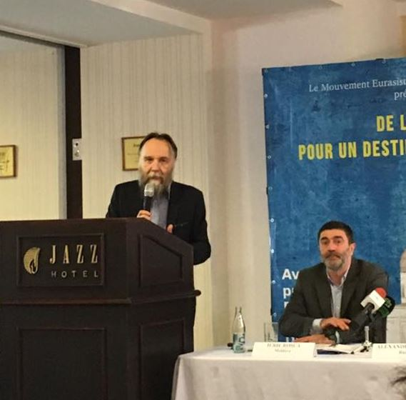
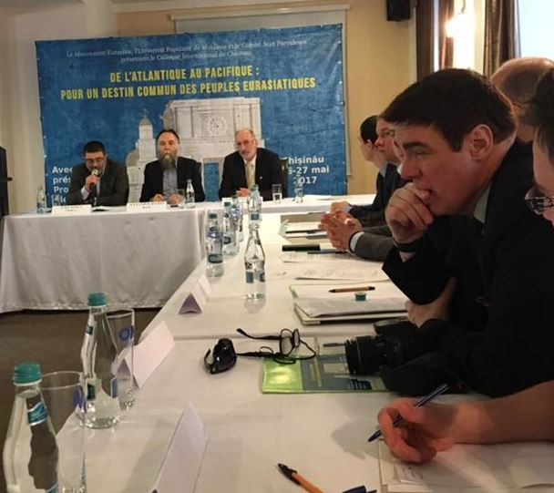
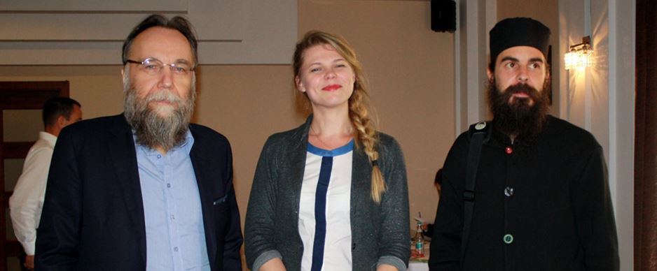

Nous, participants à la Conférence Internationale « De l’Atlantique au Pacifique : pour un destin commun des peuples eurasiatiques », intellectuels de Moldavie, Roumanie, Russie, Grèce, France, Italie, Serbie, Géorgie et Belgique, adoptons le Manifeste suivant :
1.
Après le déclin et la disparition du bloc socialiste de l’Europe de l’Est à la fin du siècle dernier, une nouvelle vision géopolitique de l’Ancien monde, notamment dans ses relations avec les Amériques, est devenue urgemment nécessaire. Car l’inertie de la pensée politique et le manque d’imagination historique des actuelles élites occidentales nous ont amenés à une conclusion simpliste à savoir que la base conceptuelle de la démocratie libérale de style occidental, de l'économie de marché et de la domination stratégique des États-Unis, est devenue l’unique solution aux défis émergents. Ce modèle, tenu pour universel, devant être impérieusement celui de l’humanité tout entière.
2.
Ce nouveau visage du monde s’impose à tous : la réalité d'un monde entièrement organisé suivant le paradigme euratlantique. Un influent groupe de réflexion néo-conservateur de Washington n’a pas hésité à utiliser la formule qui exprimait le mieux leur point de vue : « l’Empire global », unipolaire et se déployant naturellement par cercles concentriques. En son centre « le Nord riche » et la sphère occidentaliste, laquelle inclut les territoires extérieurs que sont l’Archipel nippon, la Corée du Sud, la Nouvelle Zélande et l’Australie. Le reste du monde, fait de zones « sous-développées » ou « en développement » étant considéré comme une vaste périphérie destinée à évoluer dans la même direction, mais avec retard.
3.
En accord avec cette vision unipolaire, l’Europe est perçue comme une zone satellite Nord-américaine et tête-de-pont continentale de l’aire anglo-saxonne débouchant sur l’espace eurasiatique.
L’Europe bien que faisant partie intégrante du Nord riche ne peut cependant prétendre y assumer un quelconque leadership. L’Europe, à la lumière d’un tel projet, est perçue comme instrument de l’histoire conduite par l’Amérique-Monde et non comme sujet autonome, c’est-à-dire comme une entité géopolitique privée de toute identité spécifique et de toute souveraineté authentique. La plus grande partie des singularités culturelles, confessionnelles, ethno-historiques, son héritage gréco-latin et ses racines chrétiennes, sont désormais considérés comme obsolètes. Considérant que la part utile de ces legs du passé a déjà été intégrée dans le projet global ; le reste est frappé sans recours d’inutilité. L’Europe décrétée géopolitiquement négligeable, vidée de sa propre substance et privée de toute indépendance réelle.
4.
La crise économique devenue quasi permanente et qu’accompagnent des politiques d’austérité désastreuses, et des plans inefficaces qui trouvent toujours leur justification auprès d’élites économiques caractérisées par un mépris de moins en moins caché des peuples et de l’expression démocratique de leur volonté. L’absurde destin réservé à la Grèce et l’alarmante accumulation d’armes et de troupes occidentalistes aux frontières de la Russie sont autant de symptômes de cette annulation de l’Europe, et du mensonge que représente la mondialisation libérale, laquelle promettait paix et prospérité, mais qui n’apporte en fin de compte que guerre, paupérisme et instabilité.

5.
Soulignons que la démocratie et le marché libre ne sont qu’un aspect parmi beaucoup d’autres de l’apport historique européen. Bien d’autres voies en matière d’organisation politique et sociétale ont été ouvertes par de grands européens, des scientifiques, des politiques, des penseurs et des artistes. L’identité de l’Europe est beaucoup plus large et profonde que ne le présente le prêt-à-penser anglo-saxon, un mélange caricatural d'ultralibéralisme et de fétichisme du marché.
6.
L’Europe actuelle a ses propres intérêts stratégiques, lesquels diffèrent sensiblement des intérêts thalassocratiques dominants, ainsi que des besoins très distincts du projet de mondialisation libérale. Ainsi l’Europe réelle (qui n’a rien à voir avec le soviet de Bruxelles) ne peut se voir dicter ses politiques ou ses choix envers ses voisins du Sud et de l’Est.
7.
Ces considérations nous mènent, nous, intellectuels du continent Eurasiatique, profondément préoccupés de notre destin collectif, à la conclusion que nous avons maintenant, d’urgence, un impérieux besoin de construire et de militer en faveur d’une vision alternative du monde en devenir. Un monde où la place, le rôle et la mission de l’Europe et de la civilisation européenne seraient meilleurs, plus sûrs, affranchis des tutelles idéologiques asphyxiantes inhérentes au projet impérialiste de l’Empire thalassocratique.
8.
La seule alternative viable dans les circonstances actuelles semble devoir être définie dans le cadre d’un monde multipolaire. La multipolarité accorde en effet le droit et la liberté à tous les pays et à l’ensemble des aires civilisationnelles de la planète de s’organiser, se développer et construire leur avenir en accord avec leur propre identité culturelle et leur histoire. Ce socle de liberté dans les choix évolutifs et d’accès à la modernité constitue la seule base fiable pour l’établissement de relations internationales justes et équitables. Les progrès techniques et une ouverture croissante entre les pays devraient favoriser le dialogue et la prospérité entre les peuples et les nations sans pour autant léser leurs identités respectives. Les différences entre les grandes cultures et les civilisations ne doivent pas nécessairement aboutir à un désaccord entre elles. Ceci a contrario de la rhétorique simpliste et logomachique de quelques théoriciens à visées impérialistes tels Bernard Lewis et Samuel Huntington. Le dialogue à voix multiples sera le vecteur privilégié pour la création d’un nouvel ordre mondial bâti sur la coopération et la réconciliation entre cultures, religions et nations.
9.
En ce qui concerne l’Europe, nous proposons, comme manifestation concrète de l’approche multipolaire, la vision équilibrée et ouverte d’une « Plus Grande Europe » comme concept novateur pour le développement futur de notre civilisation dans ses dimensions stratégiques, sociales, culturelles, économiques et géopolitiques.

10.
La Plus Grande Europe concerne l’espace géopolitique déterminé par les limites de la civilisation européenne. Ce modèle de frontières ressort d’un concept complètement nouveau, à l’instar de l’idée d’État-civilisation. La nature révolutionnaire de ces limes implique des transformations progressives au contraire des délimitations brutales qu’ont connues les peuples soumis à l’arbitraire des vainqueurs lors de leurs partages du monde. Conséquence : cette Plus Grande Europe sera de par sa nature politique et géographique ouverte aux interactions qui se multiplieront avec ses voisins de l’Ouest, de l’Est ou du Sud.
11.
La civilisation européenne a pour fondement historique le christianisme qui s’est lui-même greffé sur le grandiose héritage gréco-latin. C’est au christianisme, sous ses diverses formes, qu’il revient de garantir dans le respect et la tolérance réciproques, dans l’espace civilisationnel de la Plus Grande Europe, la sérénité matérielle et spirituelle des différentes confessions historiquement présentes sur le continent.
12.
Cette Plus Grande Europe, dans le contexte d’un monde multipolaire, est bien entendu entourée par d’autres grands territoires, chacun fondant son homogénéité voire son unité sur les affinités culturelles existant entre les diverses nations peuplant son territoire. Nous pouvons ainsi prévoir l’apparition d’une grande Amérique du Nord, d’une grande Eurasie, d’une aire semblable en Asie Pacifique, au Moyen et Proche Orient et, dans un avenir plus lointain, d’une grande Amérique du Sud et d’une grande Afrique.

13.
Nous imaginons cette Grande Europe comme une puissance géopolitique souveraine, détentrice d’une identité culturelle affirmée, cultivant ses propres modèles sociétaux et politiques (adossés aux principes de l’ancienne tradition démocratique européenne et aux valeurs morales du christianisme), avec ses propres capacités de défense (y compris nucléaires), et avec ses propres accès stratégiques aux énergies fossiles et nouvelles , ainsi qu’aux ressources minérales et organiques.
C’est à ce titre que nous enjoignons les États européens membres de l’Alliance Atlantique, coalition belliciste d’essence anglo-saxonne et non européenne, de se retirer de l’OTAN. Quitte à entrer, pour satisfaire aux besoins de sécurité régionale et internationale, dans des alliances bilatérales ou multilatérales avec la France et la Russie, garants militaires historiques de l’indépendance européenne. Nous exigeons enfin que la Plus Grande Europe recouvre pleinement le droit régalien de l’émission monétaire, ce qui implique que les États qui la composent, se retirent de tout Traité ou Organisation internationale limitant leur souveraineté dans le domaine monétaire.
14.
La première menace à laquelle nous devons faire face est celle de l’uniformisation du monde qu’implique la loi non-dite de la croissance illimitée, de l’avidité déchaînée et du crime contre l’indépendance des peuples en tant que mode opératoire ordinaire des prédateurs financiers. Il est temps de faire à nouveau un appel général aux pays Non-alignés pour une nouvelle Conférence de Bandung ayant pour objet la construction d’un monde multipolaire.
15.
Les entreprises privées aussi bien que les institutions publiques se trouvent actuellement confrontées à l’obligation de se plier à des normes coercitives dont le seul but est de miner la souveraineté nationale et la volonté des peuples. Nous devons établir, édicter et annoncer pour l’humanité, des ensembles de normes non contraignantes dont la conception sera uniquement guidée par le principe général de la conformité à l’identité nationale, aux lois, aux traditions et aux choix collectifs de chaque nation.
16.
Plus le système financier et les marchés mondiaux sont intégrés, unifiés obéissant aux mêmes règles, et plus la prochaine crise sera destructrice et globale. Pour éviter une destruction massive de richesses et un effondrement total de l’activité humaine, la méthode la plus sûre est de construire une organisation des marchés, des systèmes de compensation, des règlements et des systèmes d’information hors de portée de la finance mondiale anglo-saxonne, du dieu dollar et du réseau bancaire de la haute finance dont l’épicentre se trouve à Bâle au sein de la Banque des Règlements Internationaux. L’Organisation du Traité de Shanghai, aussi bien que les autres organismes internationaux du même ordre, sont invitée à élaborer la base d’un véritable système multipolaire efficace et stable pour financer, commercer et échanger les biens, les services et les devises.
17.
Enfin, dans le but de promouvoir le projet d’une Plus Grande Europe et le concept de multipolarité dynamique, nous faisons appel aux diverses forces politiques des nations d’Europe occidentale et orientale, aussi bien qu’aux Russes, à leurs partenaires états-uniens, asiatiques ou autres, leur demandant d’apporter, au-delà de leurs options politiques et par-delà leurs différences culturelles et religieuses, un soutien actif à cette initiative. Nous appelons à la création de Comités pour une Plus Grande Europe. Ces comités doivent d’entrée de jeu rejeter l’unipolarité, reconnaître le danger croissant de l’impérialisme anglo-saxon, et surtout, dans le cas des comités extra-européens, élaborer de semblables concepts pour chacune des autres civilisations composant l’Humanité. En travaillant ensemble, tout en affirmant fortement nos identités spécifiques, nous parviendrons à fonder un monde équilibré, potentiellement juste et meilleur. Un monde pacifié où toute culture, foi, tradition ou création trouvera sa place légitime.
Partager cette page